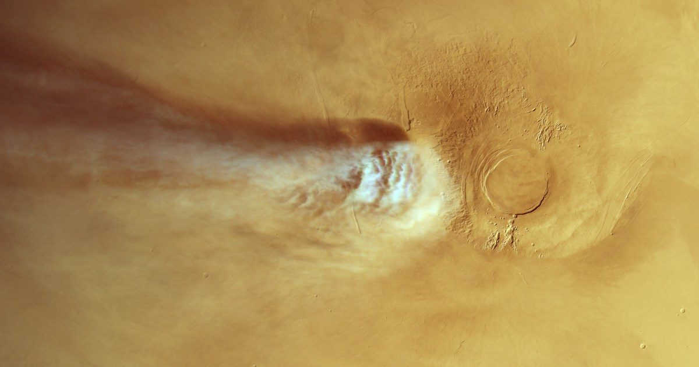

Странная наука, стоящая за самым странным облаком Марса
Ученые считают, что у них, наконец, может быть объяснение странному облаку, которое появляется и быстро исчезает каждый день над марсианским вулканом во время пыльного сезона.
Сразу после восхода солнца весной и летом на Марсе возле 20-километрового вулкана Арсия Монс образуется вытянутое облако.
Протяженность примерно 1800 км.
Продолжение статьи «Странная наука, стоящая за самым странным облаком Марса»